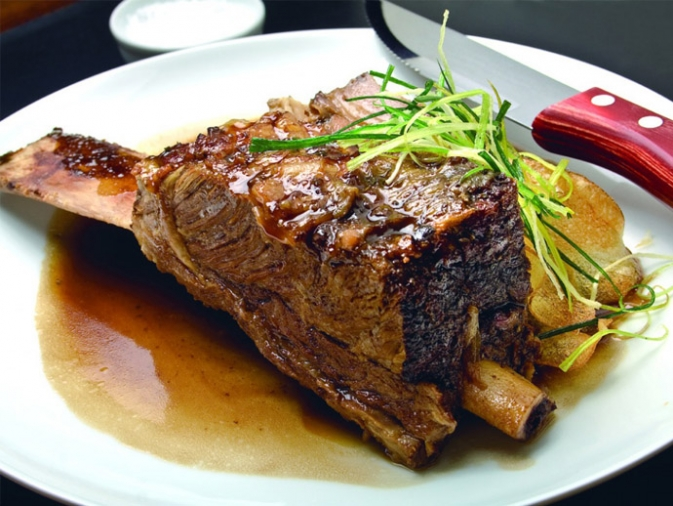

GastronBlog
Comiendo para vivir más!
Search
Inicio
Mi plato perfecto
Recetas Vegetarianas
Favoritos

Historial
Top de Platos Veganos
Top de Platos Vegetarianos
Los amantes de la carnes
Juegos Verdes
Dieta Detox
Suplementos vs SuperAlimentos